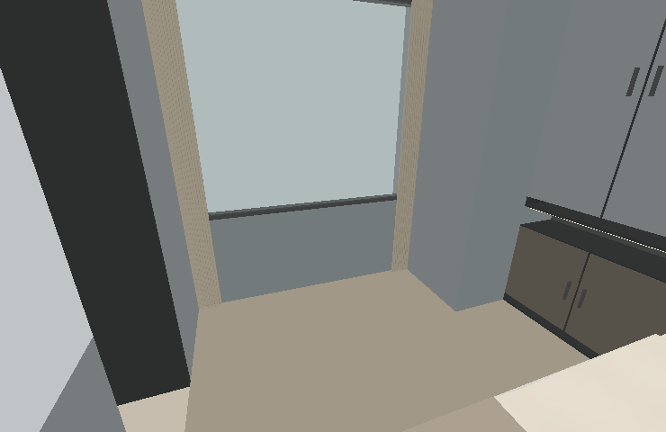

W 夢想之家 · 2026-09-11 · 四版共用
補回床左側靠窗化妝台
依原客變圖「書桌190×75」補建，改作化妝台。兩端抽屜櫃、桌上立鏡、可收於桌下的椅凳，沿用深灰棕直紋木皮。
桌面長190 × 深75cm；檯高暫定75cm。桌後預留10cm窗簾空間，床側淨距90cm；中央留腿區寬118 × 高72cm。椅凳40 × 40 × 高45cm，預設收於桌下。
桌面長深依原圖；高度、抽屜、鏡子和椅凳為本次模型提案，尚未選定產品。

補建前 補建後 · 四版相同
補建後 · 四版相同
主臥整體

以上為實際模型的離線幾何與基色檢視，不含GPU木紋、鏡面反射與照明效果；材質請以即時3D為準。
已核對四版檯面尺寸、床側步行碰撞、椅凳落地、窗簾開合及既有家具接口。原有24件設備、13個空間及原模型幾何保持一致。
家具與設備清單 · 各版調整內容 · 離線檢查紀錄